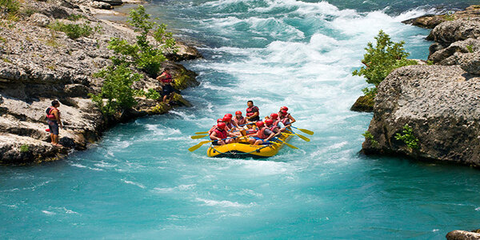

The following rivers are a few that you will love:
Colorado River, Grand Canyon, USA
This famous river tops most lists of the best rafting rivers in the world. The Colorado River through the Grand Canyon is the quintessential whitewater rafting trip with huge rapids, picturesque calm stretches, and some of the best camping ever.
Middle Fork of the Salmon River, Idaho, USA
The Middle Fork of the Salmon River is known as another of North America’s most iconic river rafting experiences. Set in a federally protected wilderness area, the long, 104-mile (167 km) journey is nothing short of spectacular with snowcapped peaks towering over granite canyons thick with forests along the banks.
Nolichucky River, Tennessee, USA
The Nolichucky River flows 115 miles from western North Carolina to northeastern Tennessee. The Unaka Mountains provide an incredible backdrop for whitewater rafting class 3-4 rapids through the steepest river gorge east of the Mississippi.